1.EBLK日志收集方案
ELK 是elastic公司提供的一套完整的日志收集以及展示的解决方案，是三个产品的首字母缩写，分别是ElasticSearch、Logstash 和 Kibana。该组合版本会统一发布。
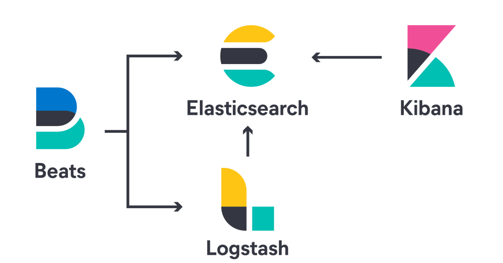
ElasticSearch简称ES，它是一个实时的分布式搜索和分析引擎，它可以用于全文搜索，结构化搜索以及分析。
它是一个建立在全文搜索引擎 Apache Lucene 基础上的搜索引擎，使用 Java 语言编写。
Logstash是一个具有实时传输能力的数据收集引擎，用来进行数据收集（如：读取文本文件）、解析，并将数据发送给ES。
Kibana为 Elasticsearch 提供了分析和可视化的 Web 平台。
它可以在 Elasticsearch 的索引中查找，交互数据，并生成各种维度表格、图形。
2.为什么用ELK
一般我们需要进行日志分析场景：直接在日志文件中 grep、awk 就可以获得自己想要的信息。但在规模较大的场景中，此方法效率低下，面临问题包括日志量太大如何归档、文本搜索太慢怎么办、如何多维度查询。需要集中化的日志管理，所有服务器上的日志收集汇总。常见解决思路是建立集中式日志收集系统，将所有节点上的日志统一收集，管理，访问。
一般大型系统是一个分布式部署的架构，不同的服务模块部署在不同的服务器上，问题出现时，大部分情况需要根据问题暴露的关键信息，定位到具体的服务器和服务模块，构建一套集中式日志系统，可以提高定位问题的效率。
一个完整的集中式日志系统，需要包含以下几个主要特点：
- 收集－能够采集多种来源的日志数据
- 传输－能够稳定的把日志数据传输到中央系统
- 存储－如何存储日志数据
- 分析－可以支持 UI 分析
- 警告－能够提供错误报告，监控机制
ELK提供了一整套解决方案，并且都是开源软件，之间互相配合使用，完美衔接，高效的满足了很多场合的应用。
ELK组件解释
ELK是三个开源软件的缩写，分别表示：Elasticsearch , Logstash, Kibana , 它们都是开源软件。
新增了一个FileBeat，它是一个轻量级的日志收集处理工具(Agent)，Filebeat占用资源少，适合于在各个服务器上搜集日志后传输给Logstash，官方也推荐此工具。
Elasticsearch是个开源分布式搜索引擎，提供搜集、分析、存储数据三大功能。
它的特点有：分布式，零配置，自动发现，索引自动分片，索引副本机制，restful风格接口，多数据源，自动搜索负载等。
Logstash 主要是用来日志的搜集、分析、过滤日志的工具，支持大量的数据获取方式。
一般工作方式为c/s架构，client端安装在需要收集日志的主机上，server端负责将收到的各节点日志进行过滤、修改等操作在一并发往elasticsearch上去。
Kibana 也是一个开源和免费的工具，Kibana可以为 Logstash 和 ElasticSearch 提供的日志分析友好的 Web 界面，可以帮助汇总、分析和搜索重要数据日志。
Filebeat隶属于Beats。
目前Beats包含四种工具：Packetbeat（搜集网络流量数据）Topbeat（搜集系统、进程和文件系统级别的 CPU 和内存使用情况等数据）Filebeat（搜集文件数据）Winlogbeat（搜集 Windows 事件日志数据）
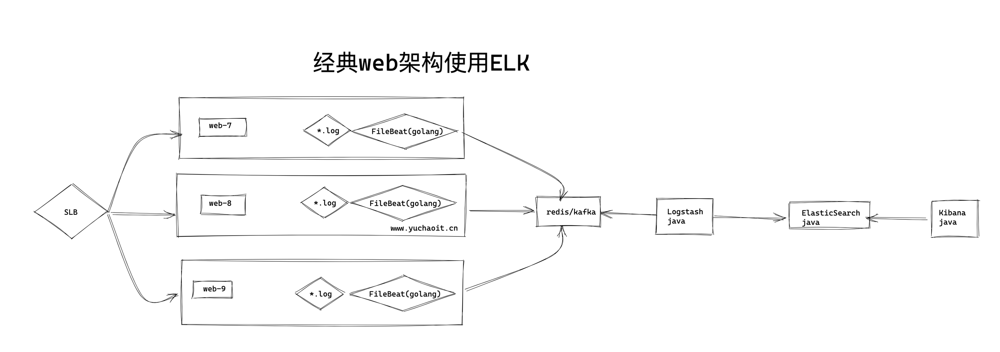
3.ELK的用途
传统意义上，ELK是作为替代Splunk的一个开源解决方案。
Splunk 是日志分析领域的领导者。日志分析并不仅仅包括系统产生的错误日志，异常，也包括业务逻辑，或者任何文本类的分析。
而基于日志的分析，能够在其上产生非常多的解决方案，譬如：
1.问题排查。我们常说，运维和开发这一辈子无非就是和问题在战斗，所以这个说起来很朴实的四个字，其实是沉甸甸的。很多公司其实不缺钱，就要稳定，而要稳定，就要运维和开发能够快速的定位问题，甚至防微杜渐，把问题杀死在摇篮里。日志分析技术显然问题排查的基石。基于日志做问题排查，还有一个很帅的技术，叫全链路追踪，比如阿里的eagleeye 或者Google的dapper，也算是日志分析技术里的一种。
2.监控和预警。 日志，监控，预警是相辅相成的。基于日志的监控，预警使得运维有自己的机械战队，大大节省人力以及延长运维的寿命。
3.关联事件。多个数据源产生的日志进行联动分析，通过某种分析算法，就能够解决生活中各个问题。比如金融里的风险欺诈等。这个可以可以应用到无数领域了，取决于你的想象力。
4.数据分析。 这个对于数据分析师，还有算法工程师都是有所裨益的。
经典Web日志架构
更复杂的场景就是
加入kafka
升级logstash集群，ES集群
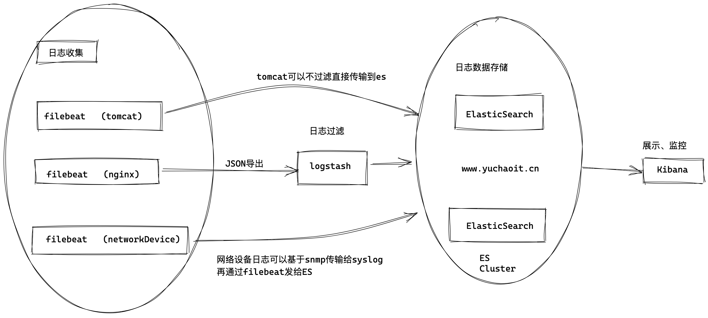
工作ELK日常
每天上班的运维小于，实在没事干，就看看elk日志
1. 网站访问日志，ip是否有异常
2. 网站访问日志，接口是否被攻击
3. 网站访问日志，统计出，公司流量高峰，低谷时间段
4. 采集所有nginx服务器的access.log，统一分析
5. HTTP状态码统一分析、
部署ES单节点
建议恢复机器，重新配置，做实验先入门学习。
建议4G内存以上。
cat > /etc/elasticsearch/elasticsearch.yml <<'EOF'
node.name: devops01
path.data: /var/lib/elasticsearch
path.logs: /var/log/elasticsearch
bootstrap.memory_lock: true
network.host: 127.0.0.1,10.0.0.18
http.port: 9200
discovery.seed_hosts: ["10.0.0.18"]
cluster.initial_master_nodes: ["10.0.0.18"]
EOF
[root@es-node1 ~]#systemctl restart elasticsearch.service
[root@es-node1 ~]#
[root@es-node1 ~]#
[root@es-node1 ~]#
[root@es-node1 ~]#curl 127.0.0.1:9200
{
"name" : "devops01",
"cluster_name" : "elasticsearch",
"cluster_uuid" : "h7zS7k7zTxClZ3AqTODfdg",
"version" : {
"number" : "7.9.1",
"build_flavor" : "default",
"build_type" : "rpm",
"build_hash" : "083627f112ba94dffc1232e8b42b73492789ef91",
"build_date" : "2020-09-01T21:22:21.964974Z",
"build_snapshot" : false,
"lucene_version" : "8.6.2",
"minimum_wire_compatibility_version" : "6.8.0",
"minimum_index_compatibility_version" : "6.0.0-beta1"
},
"tagline" : "You Know, for Search"
}
[root@es-node1 ~]#
部署kibana
[root@es-node1 ~]#grep '^[a-z]' /etc/kibana/kibana.yml
server.port: 5601
server.host: "10.0.0.18"
elasticsearch.hosts: ["http://localhost:9200"]
kibana.index: ".kibana"
[root@es-node1 ~]#
[root@es-node1 ~]#systemctl start kibana
[root@es-node1 ~]#ss -tnlp| column -t
State Recv-Q Send-Q Local Address:Port Peer Address:Port
LISTEN 0 128 10.0.0.18:5601 *:* users:(("node",pid=20499,fd=18))
LISTEN 0 128 *:22 *:* users:(("sshd",pid=1005,fd=3))
LISTEN 0 100 127.0.0.1:25 *:* users:(("master",pid=1296,fd=13))
LISTEN 0 128 ::ffff:10.0.0.18:9200 :::* users:(("java",pid=18278,fd=260))
LISTEN 0 128 ::ffff:127.0.0.1:9200 :::* users:(("java",pid=18278,fd=259))
LISTEN 0 128 ::ffff:10.0.0.18:9300 :::* users:(("java",pid=18278,fd=256))
LISTEN 0 128 ::ffff:127.0.0.1:9300 :::* users:(("java",pid=18278,fd=257))
LISTEN 0 128 :::22 :::* users:(("sshd",pid=1005,fd=4))
LISTEN 0 100 ::1:25 :::* users:(("master",pid=1296,fd=14))
[root@es-node1 ~]#
启动nginx配置日志
#!/bin/bash
yum install nginx -y
rm -rf /etc/nginx/conf.d/*
rm -rf /var/log/nginx/*
cat > /etc/nginx/conf.d/nginx-filebeat.conf <<'EOF'
server{
listen 80;
server_name www.yuchaoit.cn;
access_log /var/log/nginx/access.log;
root /www;
index index.html;
}
EOF
mkdir -p /www
echo 'nginx is ok...' > /www/index.html
systemctl restart nginx
curl 127.0.0.1
tail -f /var/log/nginx/access.log
4.客户端安装filebeat
https://www.elastic.co/cn/beats/filebeat
1.安装
[root@es-node2 ~]#rpm -ivh filebeat-7.9.1-x86_64.rpm
warning: filebeat-7.9.1-x86_64.rpm: Header V4 RSA/SHA512 Signature, key ID d88e42b4: NOKEY
Preparing... ################################# [100%]
Updating / installing...
1:filebeat-7.9.1-1 ################################# [100%]
[root@es-node2 ~]#
2.改配置
[root@es-node2 ~]#cp /etc/filebeat/filebeat.yml{,.bak}
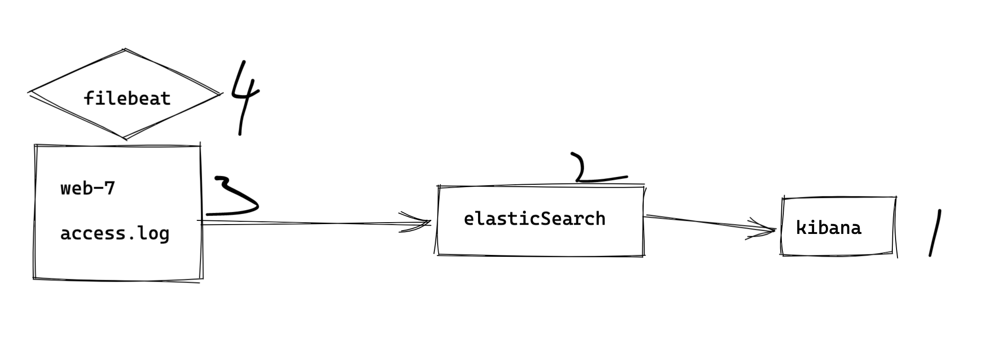
配置文件
输入
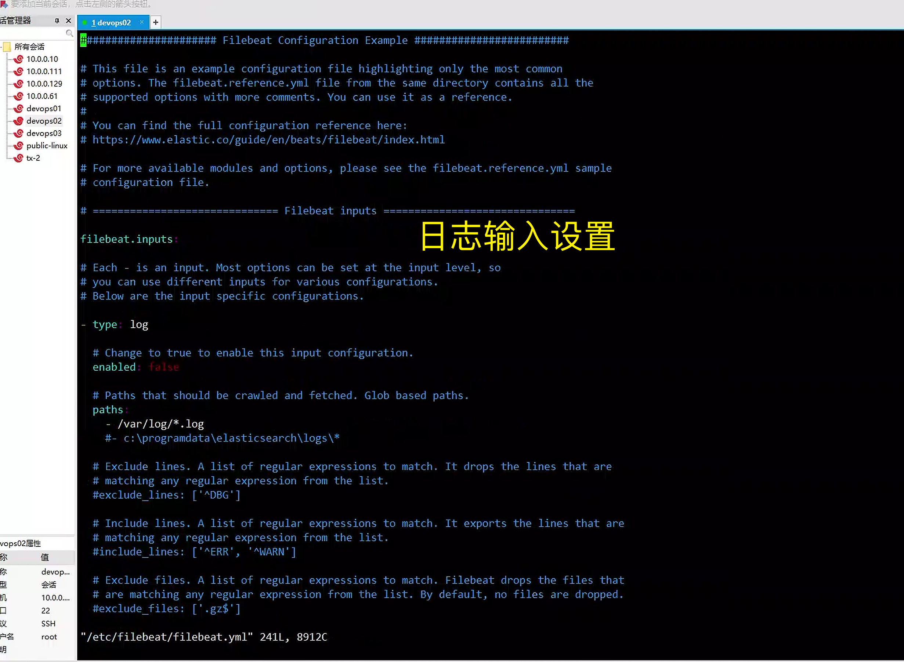
1.装在client
2.收集目标日志
13 # ============================== Filebeat inputs ===============================
14
15 filebeat.inputs:
16
17 # Each - is an input. Most options can be set at the input level, so
18 # you can use different inputs for various configurations.
19 # Below are the input specific configurations.
20
21 - type: log
22
23 # Change to true to enable this input configuration.
24 enabled: true
25
26 # Paths that should be crawled and fetched. Glob based paths.
27 paths:
28 - /var/log/nginx/*.log
29 #- c:\programdata\elasticsearch\logs\*
输出
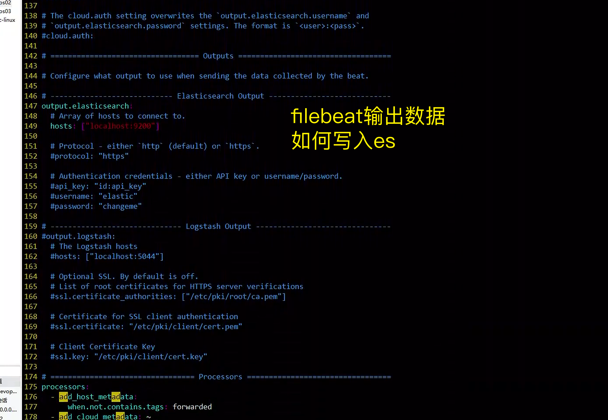
146 # ---------------------------- Elasticsearch Output ----------------------------
147 output.elasticsearch:
148 # Array of hosts to connect to.
149 hosts: ["10.0.0.18:9200"]
具体配置
filebeat数据写入es，还可以对es的如分片副本设置参数。
不用的参数可以全删除。
[root@es-node2 ~]#grep -Ev '#|^$' /etc/filebeat/filebeat.yml
filebeat.inputs:
- type: log
enabled: true
paths:
- /var/log/nginx/*.log
output.elasticsearch:
hosts: ["10.0.0.18:9200"]
[root@es-node2 ~]#systemctl start filebeat.service
[root@es-node2 ~]#ps -ef|grep filebeat
root 1911 1 2 13:23 ? 00:00:00 /usr/share/filebeat/bin/filebeat --environment systemd -c /etc/filebeat/filebeat.yml --path.home /usr/share/filebeat --path.config /etc/filebeat --path.data /var/lib/filebeat --path.logs /var/log/filebeat
启动检查filebeat数据
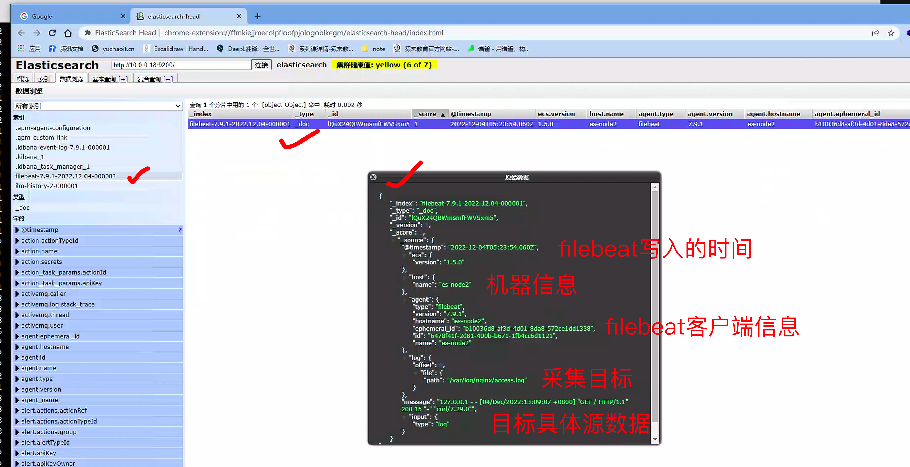
检查filebeat日志
[root@es-node2 ~]#journalctl -u filebeat
查看日志收集流程
1. nginx记录日志
[root@es-node2 ~]#curl 127.0.0.1/yuchao666
[root@es-node2 ~]#wc -l /var/log/nginx/*
6 /var/log/nginx/access.log
5 /var/log/nginx/error.log
11 total
[root@es-node2 ~]#
2.查看es
GET /filebeat-7.9.1-2022.12.04-000001/_search
3.filebeat会持续性收集目标日志，10s一次
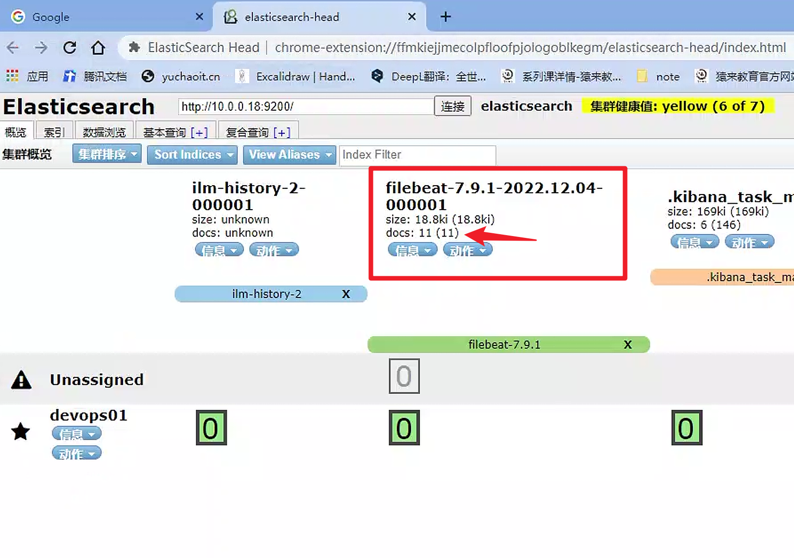
es-head查看es
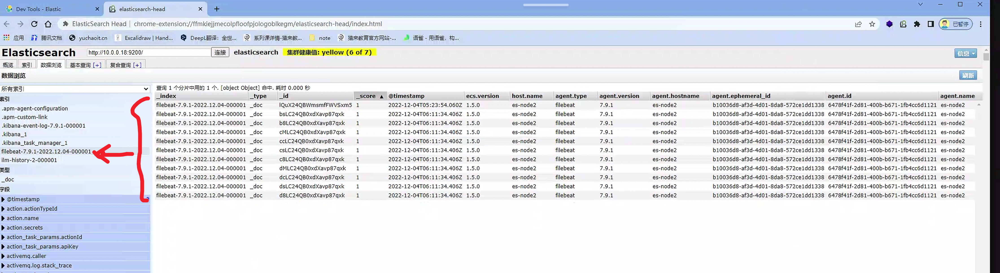
kibana查询nginx日志
1. 导入es索引
2. 查看es索引，查询nginx日志
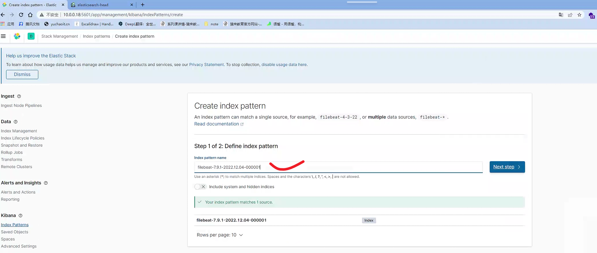
添加时间排序规则
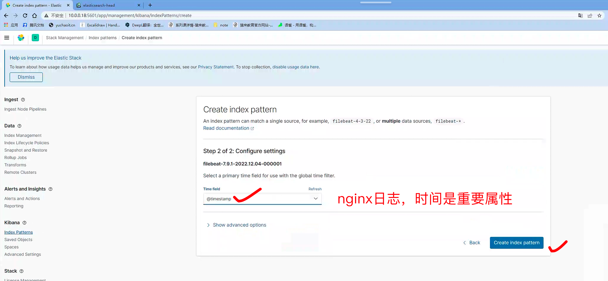
discover查看日志
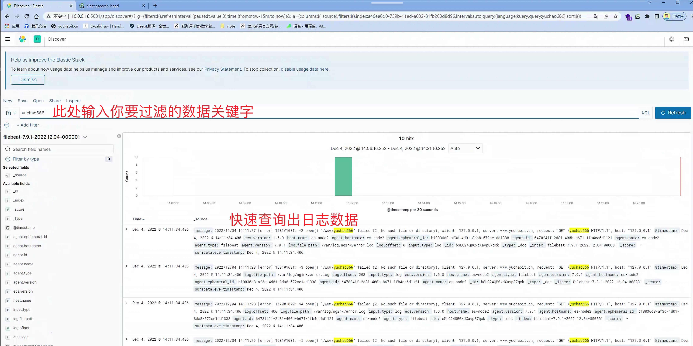
查看ELK持续收集日志
1.模拟线上用户访问
[root@es-node2 ~]#for i in {1..20000};do curl -s 127.0.0.1/chaoge666 -o /dev/null ;done
2.看es
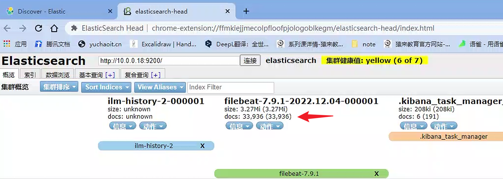
3.看kibana
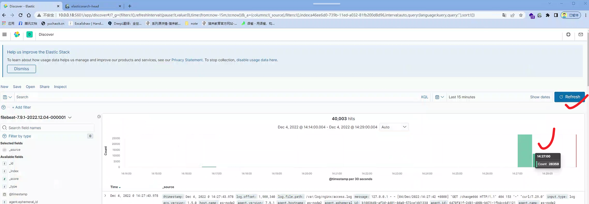
4.设置时间区间
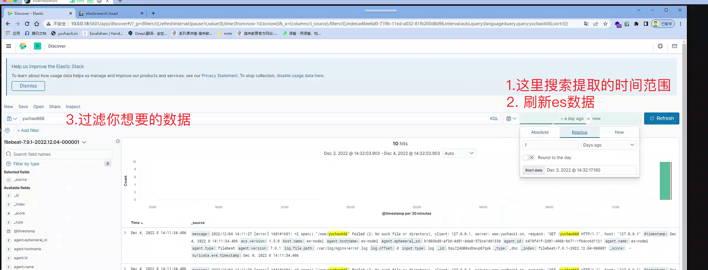
5.解读kibana面板
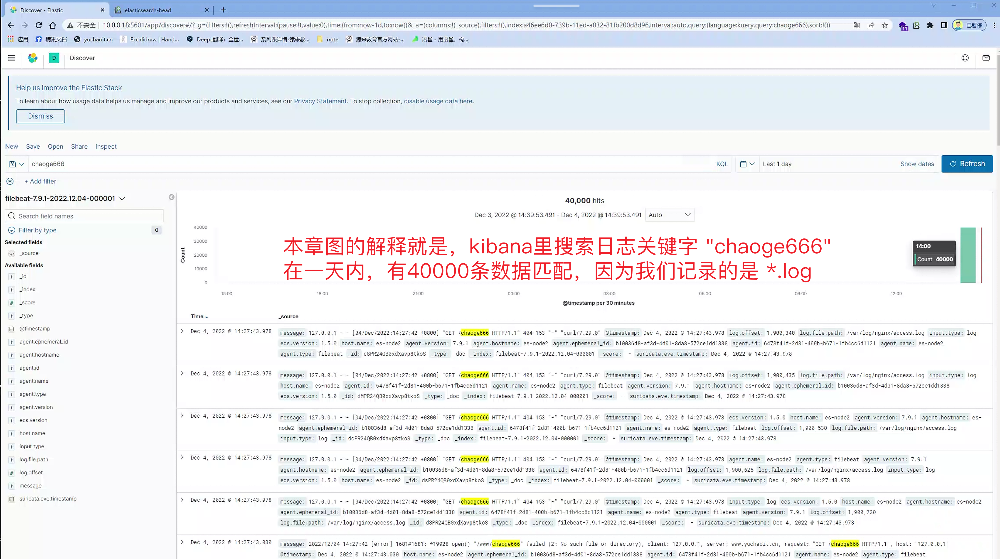
es原始日志数据，字段是message。
6.过滤kibana面板字段
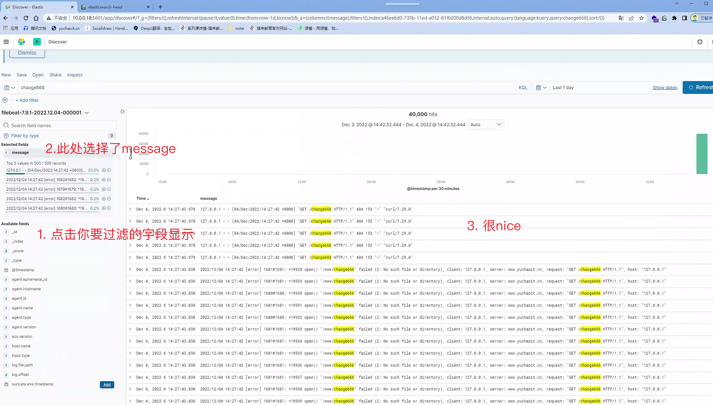
再加一个字段
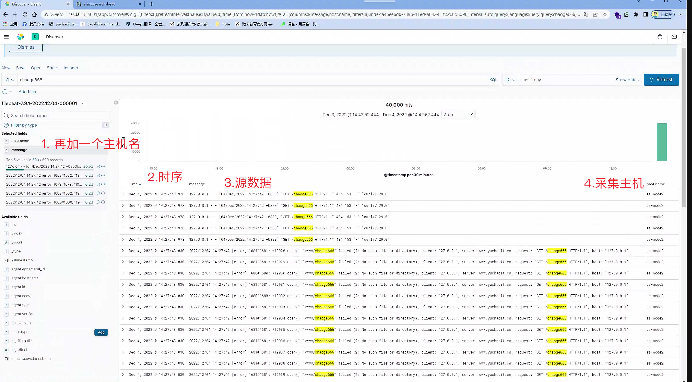
移动字段，排序
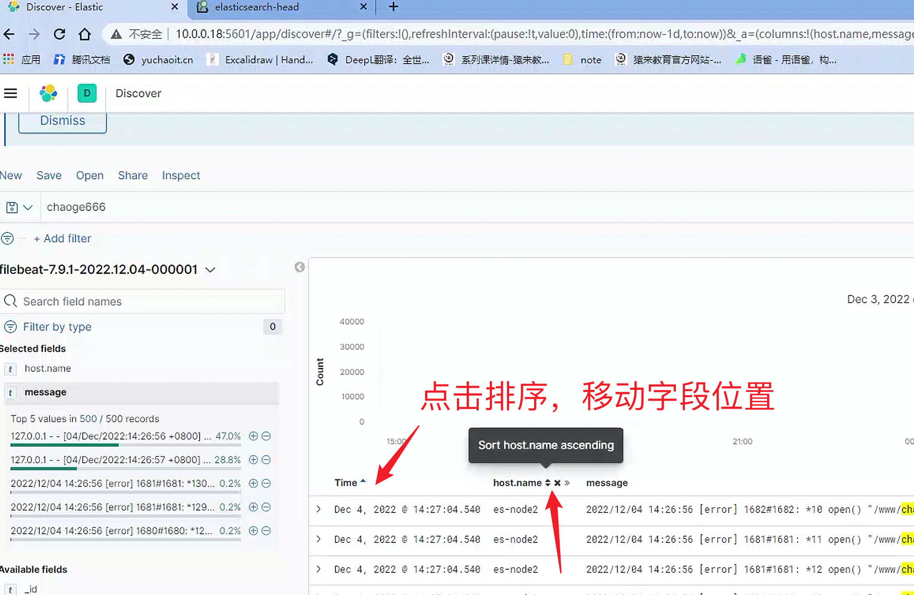
7.注意通配符添加
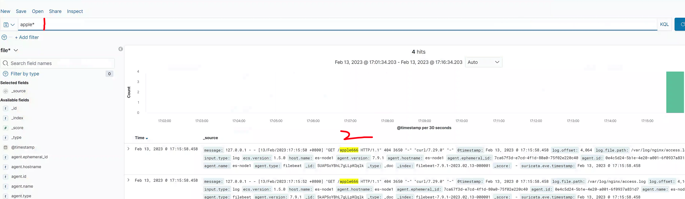
重启filebeat
# 重启，重新生成es下的filebeat索引
[root@es-node1 ~]#systemctl restart filebeat.service
# 继续在10.0.0.18:9200 查看新的index，以及日志docs
5.filebeat收集nginx日志（json）
1.为什么要转换nginx日志格式
由于nginx普通日志收集过来的日志内容都是存在一个字段中的值，我们想单独对日志中的某一项进行查询统计，比如我只想查看某个IP请求了我那些页面，一共访问了多少次，在普通的日志中是无法过滤的，不是很满意
如下图，可以明显的看出，收集过来的日志信息都是在一块的，不能够根据某一项内容进行查询。
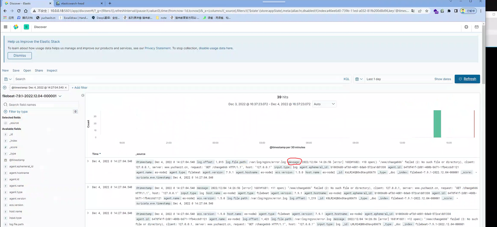
因此就需要让filebeat收集json格式日志内容，把日志内容分成不同的字段，也就是Key/value，这样我们就可以根据一个字段去统计这个字段的相关内容了
我们期望日志收集过来是这个样子的
$remote_addr：192.168.81.210
$remote_user：-
[$time_local]：[15/Jan/2021:15:03:39 +0800]
$request:GET /yem HTTP/1.1"
$status：404
$body_bytes_sent：3650
$http_referer: -
$http_user_agent："Mozilla/5.0 (Windows NT 10.0; Win64; x64) AppleWebKit/537.36 (KHTML, like Gecko) Chrome/87.0.4280.88 Safari/537.36"
$http_x_forwarded_for：-
中文格式更是我们期望的
客户端地址：192.168.81.210
访问时间：[15/Jan/2021:15:03:39 +0800]
请求的页面:GET /yem HTTP/1.1"
状态码：404
传输流量：3650
跳转来源: -
客户端程序："Mozilla/5.0 (Windows NT 10.0; Win64; x64) AppleWebKit/537.36 (KHTML, like Gecko) Chrome/87.0.4280.88 Safari/537.36"
客户端外网地址：-
请求响应时间：-
后端地址：-
2.修改nginx配置
改进filebeat
1. 修改索引名
2. 修改日志格式，改造access.log 为 key:value形式，可以更自由在kibana展示。
修改nginx.conf
log_format json '{"客户端内网地址":"$remote_addr",'
'"时间":"$time_iso8601",'
'"URL":"$request",'
'"状态码":$status,'
'"传输流量":$body_bytes_sent,'
'"跳转来源":"$http_referer",'
'"浏览器":"$http_user_agent",'
'"客户端外网地址":"$http_x_forwarded_for",'
'"请求响应时间":$request_time,'
'"后端地址":"$upstream_addr"}';
access_log /var/log/nginx/access.log json;
3.重启查看新日志nginx格式
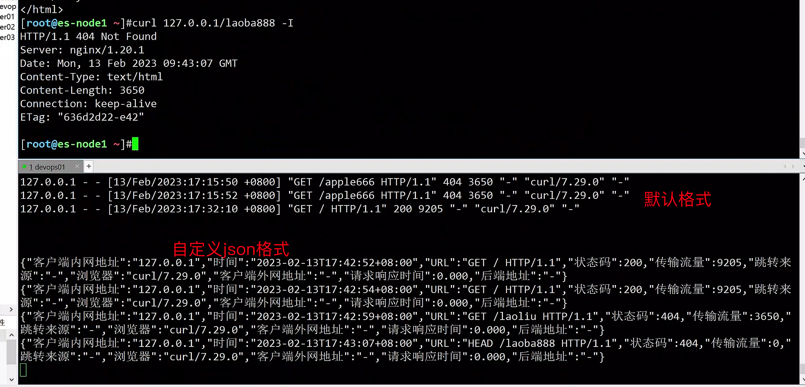
但是此时es能正确拿到filebeat数据吗？注意删掉旧的filebeat索引，重新查看。
清空，删除所有es 索引，注意测试用法，生产别执行。
[root@es-node1 ~]#curl -X DELETE 'http://localhost:9200/_all'
{"acknowledged":true}
[root@es-node1 ~]#systemctl restart filebeat.service
[root@es-node1 ~]#
[root@es-node1 ~]#systemctl restart filebeat.service
[root@es-node1 ~]#
注意再去访问nginx，产生日志，此时filebeat会抓取新日志数据，写入es，生成索引
[root@es-node1 ~]#curl 127.0.0.1
[root@es-node1 ~]#curl 127.0.0.1
[root@es-node1 ~]#curl 127.0.0.1
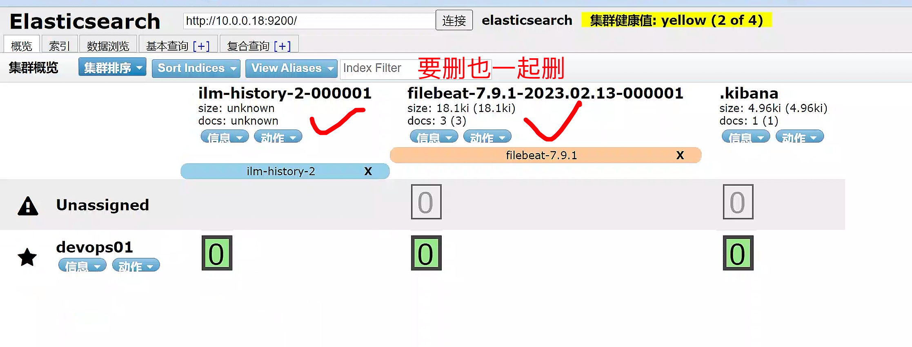
es并没有正常的解析json数据，只是构造了一个整体message数据字符串，不好处理。
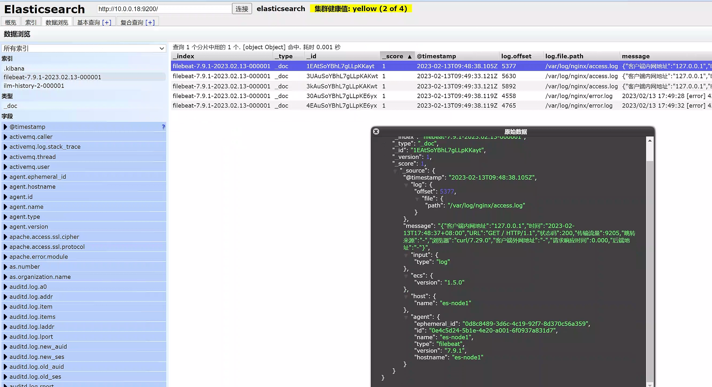
3.修改filebeat配置
修改数据源的输入格式，改造key成json格式。
[root@es-node1 ~]#cat /etc/filebeat/filebeat.yml
filebeat.inputs:
- type: log
enabled: true
paths:
- /var/log/nginx/*.log
json.keys_uner_root: true
json.overwrite_keys: true
output.elasticsearch:
hosts: ["10.0.0.18:9200"]
[root@es-node1 ~]#
[root@es-node1 ~]#systemctl restart filebeat.service
[root@es-node1 ~]#
- 重建filebeat索引
- 重新访问nginx > filebeat > es
- 注意坑，我们测试的是access.log，而没修改error.log
curl 10.0.0.18 # 确保正确日志 记录
4.最终es解析nginx(json)
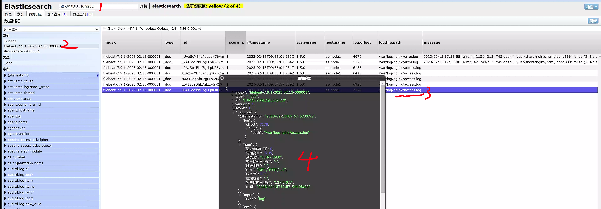
5.kibana重新加索引
即使index名一样，也得更新es索引，才能确保kubana拿到最新json格式数据。
6.filebeat修改index名
filebeat采集数据，输入数据的文档
https://www.elastic.co/guide/en/beats/filebeat/current/filebeat-input-log.html
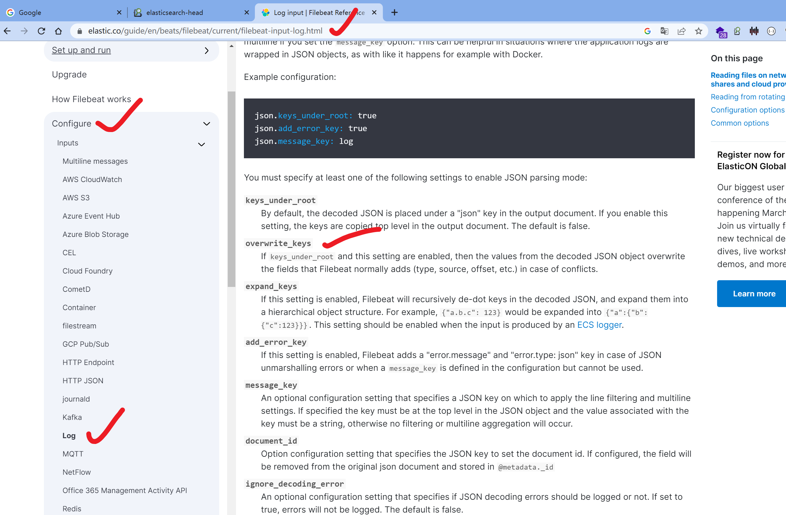
需求：期望修改filebeat输入格式
参考文档
https://www.elastic.co/guide/en/beats/filebeat/current/filebeat-input-log.html#_index_12
https://www.elastic.co/guide/en/beats/filebeat/current/configuration-logging.html
https://www.elastic.co/guide/en/beats/filebeat/current/configuration-template.html 修改日志格式
https://www.elastic.co/guide/en/beats/filebeat/8.6/ilm.html 修改默认的模板，修改日志的生命周期(ilm)
修改filebeat配置文件，最终配置
[root@es-node1 ~]#cat /etc/filebeat/filebeat.yml
filebeat.inputs:
- type: log
enabled: true
paths:
- /var/log/nginx/*.log
json.keys_uner_root: true
json.overwrite_keys: true
output.elasticsearch:
hosts: ["10.0.0.18:9200"]
index: "nginx-%{[agent.version]}-%{+yyyy.MM.dd}"
setup.ilm.enabled: false
setup.template.enabled: false
logging.level: info
logging.to_files: true
logging.files:
path: /var/log/filebeat
name: filebeat
keepfiles: 7
permissions: 0644
[root@es-node1 ~]#
[root@es-node1 ~]#systemctl restart filebeat
[root@es-node1 ~]#
[root@es-node1 ~]#systemctl status filebeat
● filebeat.service - Filebeat sends log files to Logstash or directly to Elasticsearch.
Loaded: loaded (/usr/lib/systemd/system/filebeat.service; disabled; vendor preset: disabled)
Active: active (running) since Thu 2023-02-16 17:05:08 CST; 4s ago
Docs: https://www.elastic.co/products/beats/filebeat
Main PID: 2345 (filebeat)
CGroup: /system.slice/filebeat.service
└─2345 /usr/share/filebeat/bin/filebeat --environment systemd -c /etc/filebeat/filebeat.yml --path.home /usr/share/filebeat --path.config /etc/filebeat --path.data /...
Feb 16 17:05:08 es-node1 systemd[1]: Started Filebeat sends log files to Logstash or directly to Elasticsearch..
Feb 16 17:05:08 es-node1 systemd[1]: Starting Filebeat sends log files to Logstash or directly to Elasticsearch....
[root@es-node1 ~]#
[root@es-node1 ~]#
# 别忘记给nginx发请求，让filebeat有东西收集！！有输入才能有索引！！
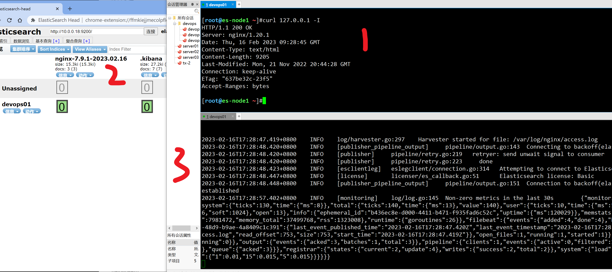
查看索引数据
{
"_index":"nginx-7.9.1-2023.02.16",
"_type":"_doc",
"_id":"mtmOWYYBuYvrH-J3Evp7",
"_version":1,
"_score":1,
"_source":{
"@timestamp":"2023-02-16T09:28:47.420Z",
"agent":{
"id":"0e4c5d24-5b1e-4e20-a001-6f0937a831d7",
"name":"es-node1",
"type":"filebeat",
"version":"7.9.1",
"hostname":"es-node1",
"ephemeral_id":"b436ec8e-d000-4411-b471-f935fad6c52c"
},
"log":{
"offset":0,
"file":{
"path":"/var/log/nginx/access.log"
}
},
"json":{
"URL":"HEAD / HTTP/1.1",
"传输流量":0,
"浏览器":"curl/7.29.0",
"客户端内网地址":"127.0.0.1",
"跳转来源":"-",
"后端地址":"-",
"状态码":200,
"客户端外网地址":"-",
"请求响应时间":0,
"时间":"2023-02-16T17:28:38+08:00"
},
"input":{
"type":"log"
},
"ecs":{
"version":"1.5.0"
},
"host":{
"name":"es-node1"
}
}
}
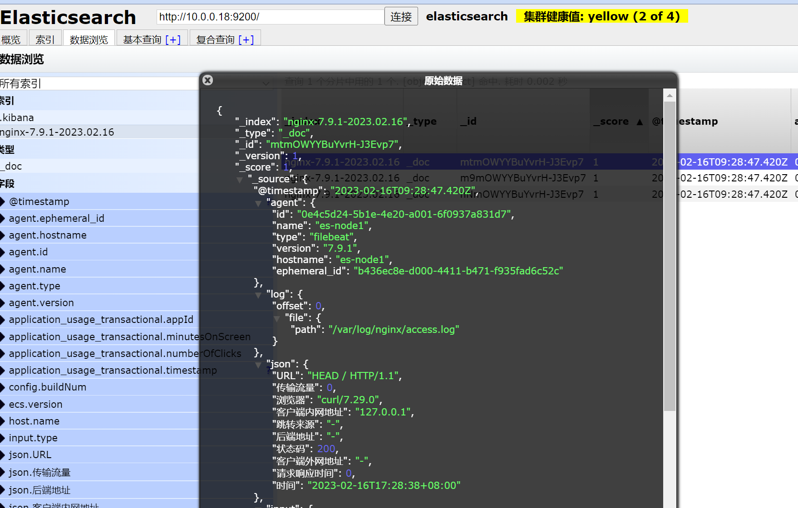
火坑记录
别忘记给nginx发请求，让filebeat有东西收集！！有输入才能有索引！！
让无数运维，反复删除重装的噩梦。
简单理解，就好比你用tail命令，你不输入，就看不到数据。
[root@es-node1 ~]#cd /var/log/filebeat/
[root@es-node1 /var/log/filebeat]#ls
filebeat filebeat.1 filebeat.2